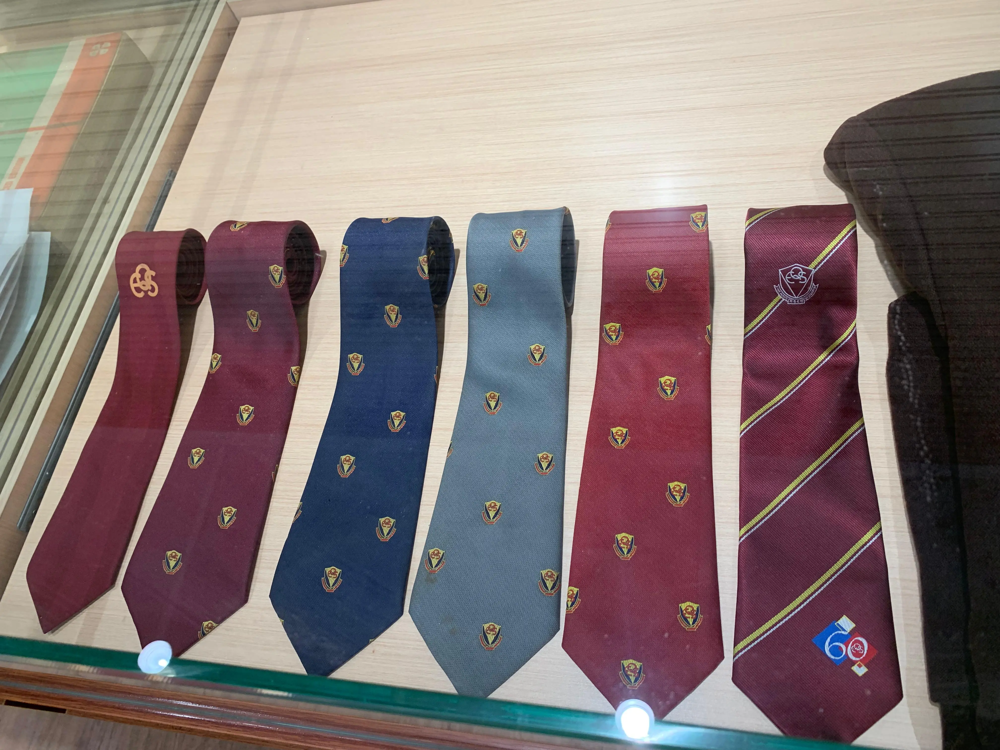
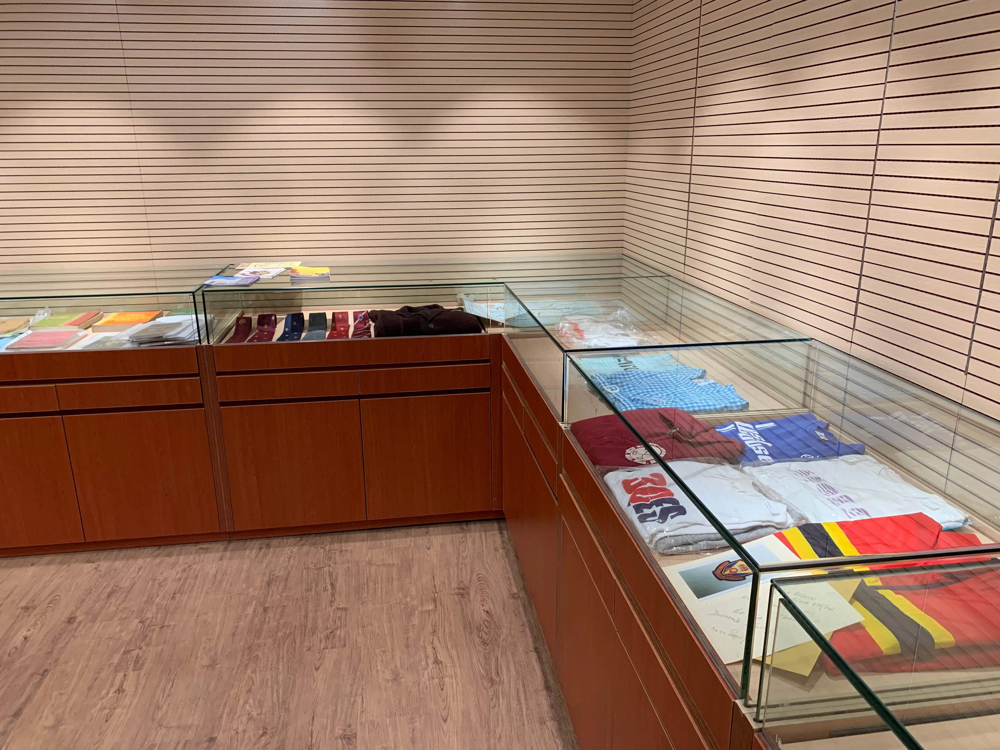
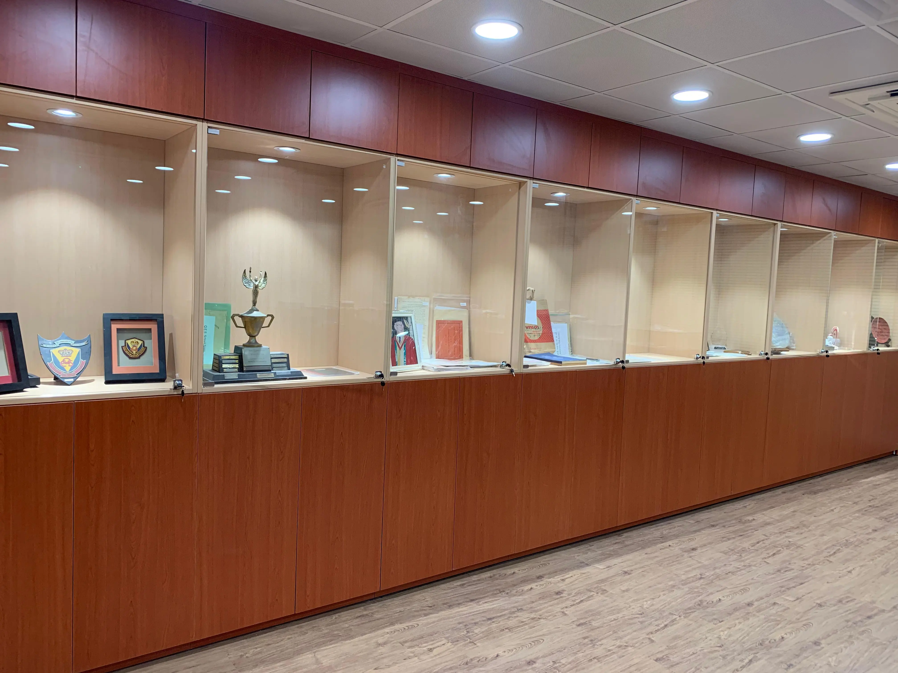
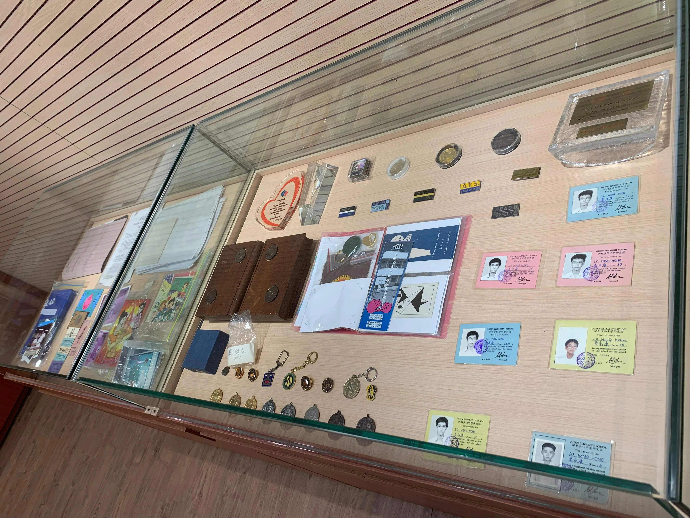

伊利沙伯中學校史館
在2012年，特區政府把前身為牙科診所的兩層建築物交予伊利沙伯中學管理，作附屬校舍之用。建築物經翻新後，成為具多元用途的空間，當中包括家教會室、校園電視台工作室和多用途活動室等。當時，不少伊中校友捐贈了具歷史價值的物件，暫放於多用途活動室內。校方亦初步構思日後將於附屬校舍成立校史館，惟暫未開展落實計劃。
伊利沙伯中學校史館的成立由第十五任校長陳祥偉先生倡議落實，希望將附屬校舍改造成一個充滿活力的學校歷史寶庫，他的前瞻性構想為校史館的成立奠定了基礎。由何雅賢副校長帶領的專責小組在實現這一願景中發揮了關鍵作用。她帶領小組各負責老師不懈奉獻，在結構規劃、展覽設計和公關聯絡方面積極籌備。在接收不同年代校友慷慨捐出的珍貴校史文物後，專責小組借鑒了其他學校和組織的經驗，用心設計出一所引人入勝的校史館；冀在第十六任校長兼校友余國健先生（87FA）領導下，為伊利沙伯中學七十周年慶典錦上添花。
自2022年迄今，校友梁臻熙（19FA）以及眾多伊中歷史科學生為博物館作出了寶貴貢獻。他們在整理藏品、保存檔案和歷史研究方面均貢獻良多，對校史館的建立起到了重要作用。本年度，「校史館學生館長」計劃將正式成立，學生館長會致力從事校史館導賞及校史研究，並支持伊中繼往開來，傳承伊中輝煌成就。



